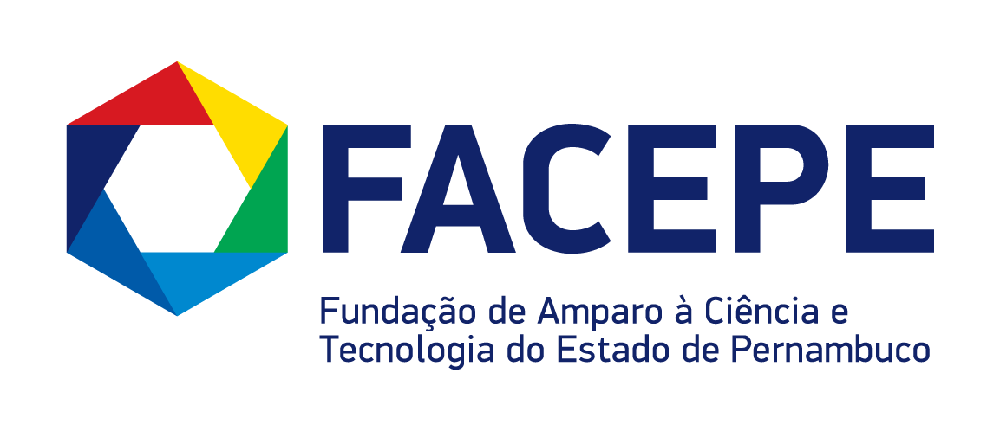
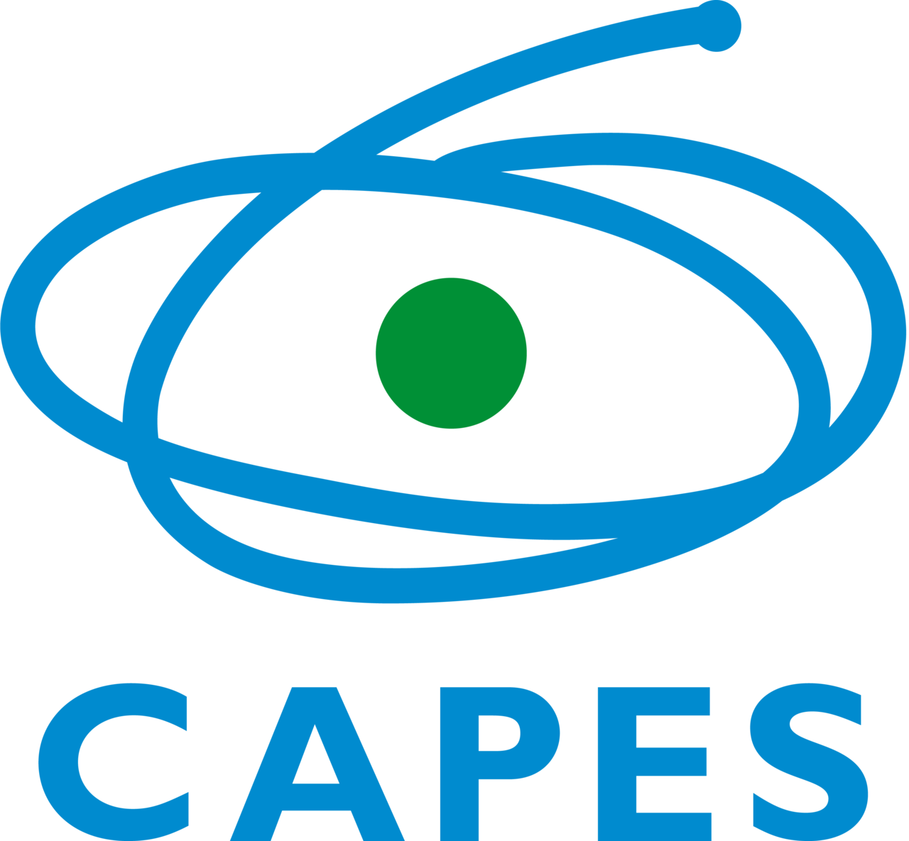

Learning Analytics
Extração de evidências analíticas para otimização dos processos de aprendizagem, avaliações e decisões pedagógicas
Laboratório de pesquisa interdisciplinar que transforma dados educacionais em decisões baseadas em evidências.
Educação, Computação e Psicologia trabalhando juntas para entender o real impacto das tecnologias na aprendizagem.
O EVANTE reúne pesquisadores de diferentes áreas do conhecimento (Educação, Computação e Psicologia) em torno de uma pergunta central: quais são os reais impactos das tecnologias educacionais na aprendizagem?
Para respondê-la, desenvolvemos experimentos científicos e análises sobre dados educacionais, extraindo evidências que apoiam decisões de gestores, professores e pesquisadores. Nosso trabalho parte do princípio de que a adoção de tecnologias na educação deve ser guiada por evidências, e não por intuição ou tendências de mercado.
O laboratório está vinculado à Universidade Federal Rural de Pernambuco (UFRPE) e ao Diretório de Grupos de Pesquisa do CNPq.
Trabalhamos com extração de evidências analíticas em diversas áreas da tecnologia educacional.
Extração de evidências analíticas para otimização dos processos de aprendizagem, avaliações e decisões pedagógicas
Técnicas analíticas em sistemas de recomendação, análise de redes sociais e mineração de dados educacionais
Experimentos aplicados a jogos, robótica educacional, pensamento computacional e ensino de programação
Interfaces de dashboards integradas aos ambientes virtuais de aprendizagem para tomada de decisões pedagógicas
Estudos analíticos através de dados educacionais abertos como ENEM, Enade, Censo Escolar, PISA, TALIS
Inferências sobre previsões de desempenho de estudantes, evasão e retenção em cursos na modalidade de EAD.
Estudos sobre a eficácia das metodologias considerando o estudante como agente principal do processo de aprendizagem.
Análise de dados para apoio a tarefas educacionais administrativas como sistemas de gestão acadêmica
Investigamos métodos e técnicas para coleta, análise e interpretação de dados educacionais, com o objetivo de compreender e aprimorar a aprendizagem e os ambientes em que ela ocorre. Desenvolvemos componentes de software, como visualizações de dados e dashboards, aplicáveis à educação a distância, ao ensino híbrido e ao presencial. A linha também contempla algoritmos de mineração de dados educacionais para identificar padrões que auxiliem educadores na tomada de decisão e na melhoria dos resultados de aprendizagem.
Estudamos como diferentes métodos e estratégias pedagógicas se comportam quando mediados por tecnologia, incluindo metodologias ativas, aprendizagem colaborativa e ensino remoto. O foco é produzir evidências sobre quais abordagens funcionam, em quais contextos e para quais perfis de estudantes.
Projetamos, construímos e avaliamos tecnologias voltadas ao ensino e à aprendizagem: de plataformas e dashboards a jogos e ambientes de programação. A avaliação segue protocolos experimentais que medem o impacto real dessas ferramentas sobre a aprendizagem, e não apenas sua usabilidade ou adoção.
![Foto de Rodrigo Lins Rodrigues, coordenador do EVANTE]()
Doutor e Mestre em Ciência da Computação (CIn/UFPE), Licenciado em Ciência da Computação e Bacharel em Estatística. Professor Associado da UFRPE, docente permanente do PPGIA/UFRPE e do PPGEC/UFRPE. Pesquisa Ciência de Dados e Inteligência Artificial aplicadas à Educação, com ênfase em Educational Data Mining, Learning Analytics e Educação em Computação.
Pesquisa publicada em periódicos e conferências internacionais de referência em tecnologia educacional, Learning Analytics e mineração de dados educacionais, como Computers & Education, British Journal of Educational Technology e a conferência LAK, da ACM.
Fonte: Google Scholar, novembro de 2026.
Computers & Education
Ensaio controlado randomizado com quase 3 mil crianças do 1º ano, em 132 escolas brasileiras, avaliando jogos de celular usados em casa para apoiar a matemática inicial em contextos de baixa renda.
Ler artigo(abre em nova aba)Computers and Education: Artificial Intelligence
Aprendizado de máquina para avaliar a fluência em leitura no 2º e 3º ano, a partir de gravações de estudantes de 144 escolas brasileiras.
Ler artigo(abre em nova aba)British Journal of Educational Technology
Seção especial sobre como instituições de ensino superior da América Latina vêm adotando a Learning Analytics.
Ler artigo(abre em nova aba)Computers and Education Open
Os dados gerados dentro dos jogos ajudam a explicar seus efeitos na leitura e na escrita, ainda na pré-escola.
Ler artigo(abre em nova aba)Entertainment Computing
O efeito de jogos digitais na matemática de estudantes com diferentes perfis de engajamento, durante a pandemia.
Ler artigo(abre em nova aba)LAK21 · ACM Learning Analytics & Knowledge
Um painel para professores que transforma os dados do ambiente virtual em feedback sobre o processo de aprendizagem.
Ler artigo(abre em nova aba)LAK22 · ACM Learning Analytics & Knowledge
O que estudantes e professores de sete instituições brasileiras esperam da Learning Analytics.
Ler artigo(abre em nova aba)Levamos os resultados das pesquisas para a prática, oferecendo serviços de análise de dados e tecnologia educacional a instituições, gestores e educadores.
Apoiamos gestores e educadores na extração de evidências a partir de dados educacionais, embasando decisões pedagógicas, avaliações e políticas com análises baseadas em evidências.
Com o crescimento do uso de ambientes virtuais de aprendizagem, o volume de dados coletados passou a dificultar a análise por parte dos educadores. Desenvolvemos interfaces de dashboards integradas aos AVA que facilitam a visualização e a compreensão desses dados, apoiando decisões pedagógicas mais efetivas.
Projetamos, construímos e avaliamos tecnologias voltadas ao ensino e à aprendizagem (de plataformas e dashboards a jogos e ambientes de programação) com protocolos experimentais que medem o impacto real sobre a aprendizagem.
Oficinas e treinamentos em Learning Analytics, mineração de dados educacionais e uso pedagógico de evidências, capacitando equipes de instituições de ensino a tomar decisões guiadas por dados.
O laboratório recebe estudantes de graduação e pós-graduação interessados em Ciência de Dados Educacionais, Learning Analytics e tecnologias educacionais. Se você quer desenvolver iniciação científica, mestrado ou doutorado nessas áreas, entre em contato.
Quer uma parceria com o laboratório? O laboratório também atende instituições de ensino, gestores e empresas interessados em análise de dados educacionais, dashboards e avaliação de tecnologias educacionais. Se a sua organização quer contratar um serviço ou firmar uma parceria de pesquisa, entre em contato.
Escreva para o laboratório pelo e-mail. Para agilizar a resposta, conte na mensagem:
Instituições


![Foto de Gabriel Candido]()
![Foto de Jairo Brito]()
![Foto de José Edson]()
![Foto de Marcos Paulo]()
![Foto de Tarcis Teles]()